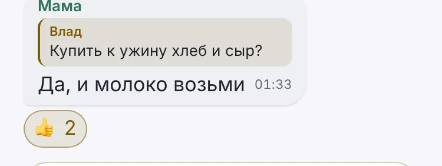
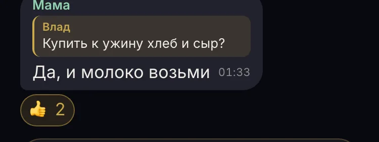
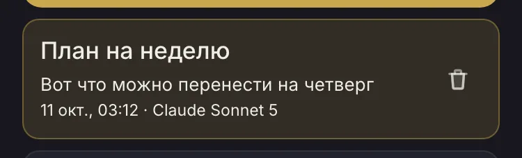
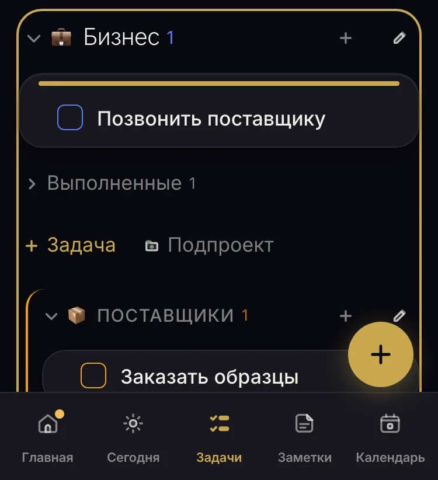

В: по роли (выбран)
Светлая
Чат: цитата основным 11.55 · моя реакция золотом 4.84

ИИ, список чатов: основным 13.04

ИИ, модель: основным 13.04

Задачи, цель переноса: кольцо без заливки, серое 5.10
Тёмная
Чат: цитата основным 10.30 · моя реакция золотом 7.08

ИИ, список чатов: основным 11.77

ИИ, модель: основным 11.77

Задачи, цель переноса: кольцо без заливки, серое 5.07
